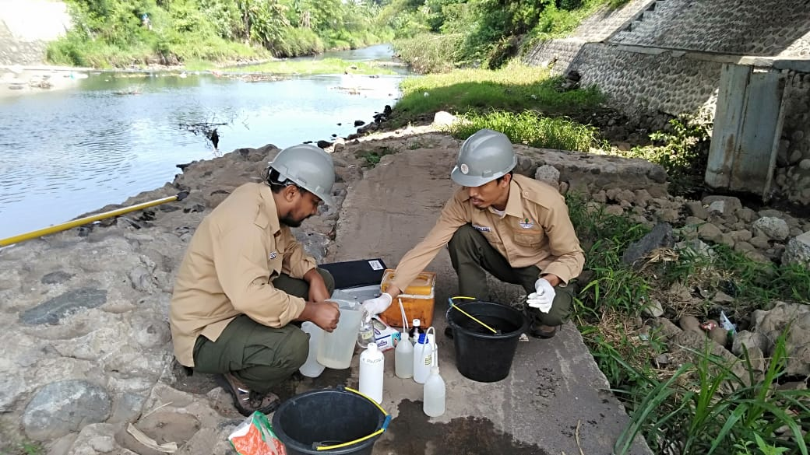
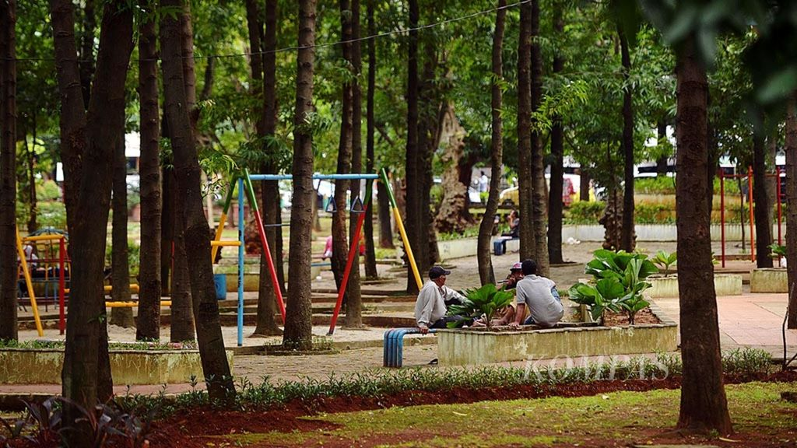
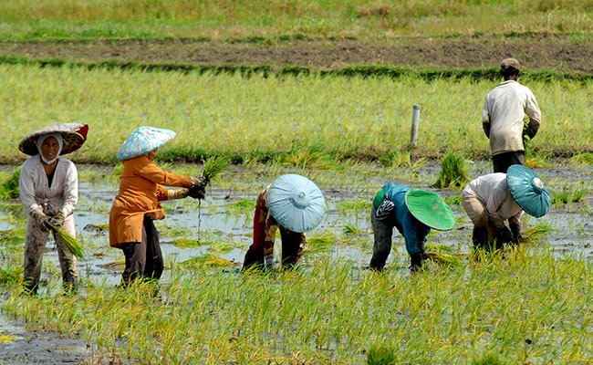

Penelitian Lingkungan
Pemantauan Kualitas Air Sungai

Penelitian ini bertujuan untuk memantau kualitas air di sungai-sungai sekitar kita. Dengan menggunakan metode sampling air dan analisis laboratorium, kita dapat menentukan tingkat polusi dan keberadaan bahan kimia berbahaya. Hasil penelitian ini penting untuk menjaga kelestarian ekosistem air dan kesehatan masyarakat sekitar.
Hasil Utama:
- Peningkatan kadar bahan kimia berbahaya pada musim hujan
- Kualitas air cenderung lebih baik di daerah hulu sungai
- Rekomendasi untuk penanganan limbah industri
Studi Keanekaragaman Hayati di Taman Kota

Penelitian ini mengeksplorasi keanekaragaman hayati di taman-taman kota. Dengan mengidentifikasi berbagai spesies tanaman dan hewan, kita dapat memahami bagaimana urbanisasi mempengaruhi ekosistem lokal. Penelitian ini juga membantu dalam merancang taman kota yang lebih ramah lingkungan.
Hasil Utama:
- Ditemukan lebih dari 50 spesies burung di Taman Kota A
- Peningkatan populasi serangga penyerbuk setelah penanaman tanaman berbunga
- Rekomendasi untuk menambah vegetasi asli
Analisis Dampak Perubahan Iklim terhadap Pertanian Lokal

Penelitian ini bertujuan untuk menganalisis bagaimana perubahan iklim mempengaruhi sektor pertanian di wilayah sekitar. Dengan memantau perubahan suhu, curah hujan, dan pola cuaca, kita dapat merumuskan strategi adaptasi untuk petani lokal.
Hasil Utama:
- Penurunan produktivitas tanaman padi akibat suhu yang meningkat
- Curah hujan yang tidak menentu mengakibatkan gagal panen pada tanaman sayuran
- Rekomendasi untuk menggunakan varietas tanaman yang tahan terhadap cuaca ekstrem